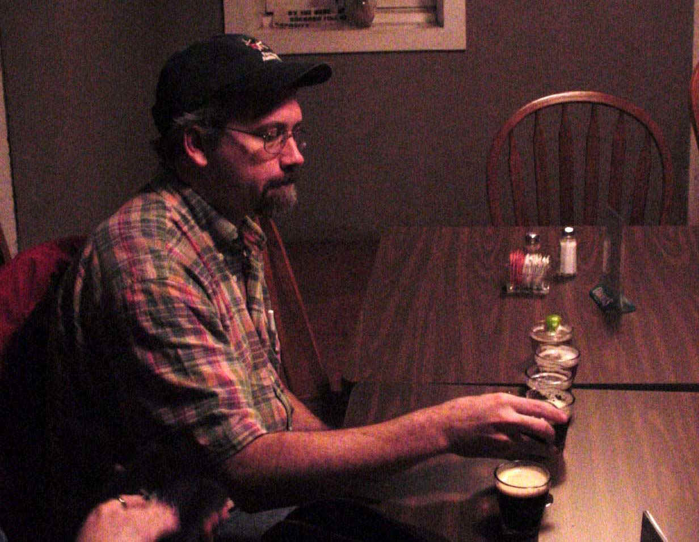

Jim Maneval
Jim Maneval is an Associate Professor in Chemical Engineering at Bucknell University and is spending his sabbatical leave at NMR. Jim has a PhD from UC Davis (1991) and has been using NMR and NMR imaging methods to study transport phenomena in systems of engineering interest since then. His current work at NMR involves the measurement of the velocity and composition profiles for granular materials in a rotating cylinder. The study is focused on the effects of mixed particle sizes on flow with an eye towards helping to find a mechanism for axial segregation. |
 |